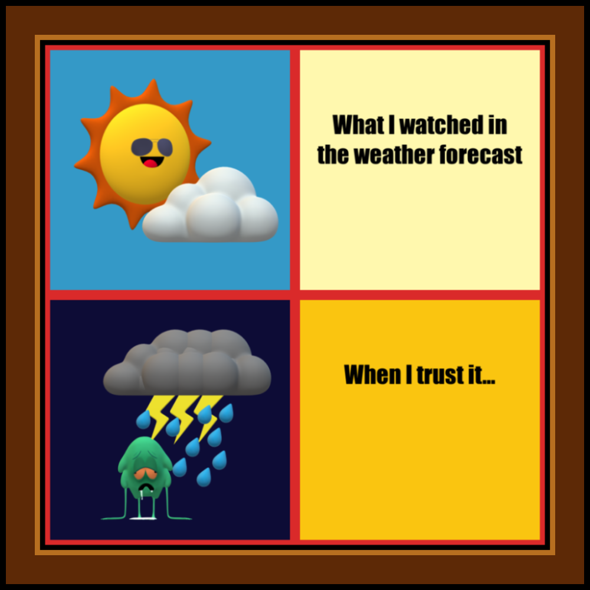
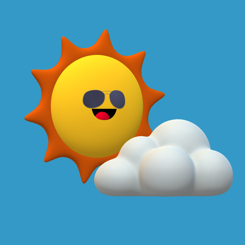
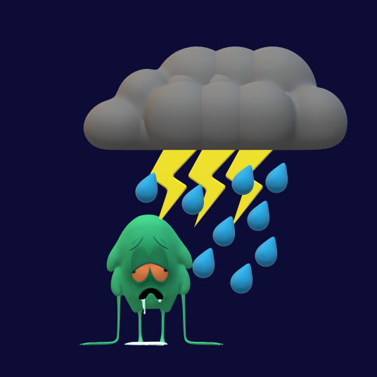

This is my newly created meme. Have you ever had a similar experience? 
library(magick)
forecast <- image_read("./images/forecast.png") %>%
image_scale(480) %>%
image_extent("500x500", color = "#da2a2a")
reality <- image_read("./images/reality.png") %>%
image_scale(480) %>%
image_extent("500x500", color = "#da2a2a")
watch_text <- image_blank(width = 500,
height = 500,
color = "#fff8ae") %>%
image_annotate(text = "\n\nWhat I watched in\nthe weather forecast",
color = "#000000",
size = 50,
font = "Impact",
gravity = "north") %>%
image_scale(480) %>%
image_extent("500x500", color = "#da2a2a")
trust_text <- image_blank(width = 500,
height = 500,
color = "#fac510") %>%
image_annotate(text = "\n\nWhen I trust it...",
color = "#000000",
size = 50,
font = "Impact",
gravity = "north") %>%
image_scale(480) %>%
image_extent("500x500", color = "#da2a2a")
meme_photo <- c(forecast, reality) %>%
image_append(stack = TRUE)
meme_text <- c(watch_text, trust_text) %>%
image_append(stack = TRUE)
meme <- c(meme_photo, meme_text) %>%
image_append()
# add 1st inner frame in black colour
meme <- image_scale(meme, 980) %>%
image_extent("1000x1000", color = "#000000")
# add 2nd inner frame in wood colour
meme <- image_scale(meme, 980) %>%
image_extent("1000x1000", color = "#b76f20")
# add 3rd inner frame in darker wood colour
meme <- image_scale(meme, 900) %>%
image_extent("1000x1000", color = "#5d2906")
# add outer frame in black colour
meme <- image_scale(meme, 980) %>%
image_extent("1000x1000", color = "#000000")
image_write(meme, "./images/my_meme.png")Have you ever trusted a weather forecast and turned out that the
weather forecast was wrong?
It is not uncommon that weather forecast predictions are
inaccurate.
Even though there are newer advanced models and instruments nowadays,
prediction of weather is still extremely hard as meteorologists are
facing various limitations[1]:
1. Availability of data
2. Time allowed to analyses the data
3. Complexity of weather events
This meme is to describe our feelings when a weather report completely goes wrong: Frustration.
The 4-square style meme has long been popular in the internet.
Below is an illustration of a typical 4-square meme:
| Photo 1 | Caption |
|---|---|
| Photo 2 | Caption |
However, I believe that it will be boring to see lots of 4-square
memes. Thus, I added a frame around the images and annotations by
calling image_scale and image_extent function 4 times. I think the meme
now is more interesting and eye-catching.
The two original images are border-free.
 
File details the meme image: * Format: png * File size: 709 KB * Resolution: 1000 x 1000
[1] Tyler Herrington, “Why is the weather so hard to predict?” Let’s
Talk Science, 23-Sep-2019. [Online].
Available: https://letstalkscience.ca/educational-resources/stem-in-context/why-weather-so-hard-predict
[Accessed: 13-Mar-2022]